Modeller — First Steps (10 minutes, no experience needed)¶
← Back to the Modeller guide · Home
One small job, start to finish: open a building, click one wall, nudge it, undo it, save. Use a desktop browser (Chrome or Edge). Every step below was run by a script against the live site and the numbers quoted are what the app itself reported.
Step 1 — Open the Modeller¶
Go to red1oon.github.io/bim-ootb/modeller/modeller.html. You should see an empty dark grid, a row of round buttons down the right edge, and the word history with a slider along the bottom.
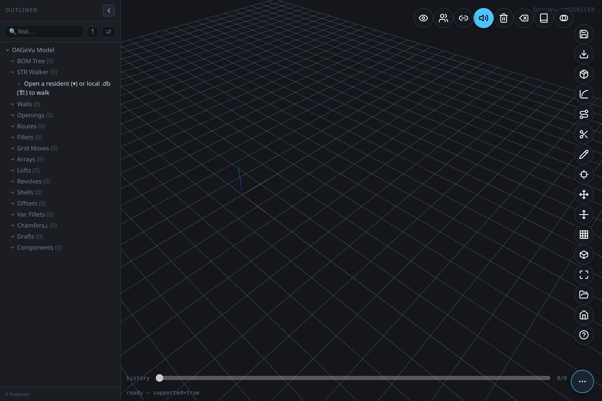
Step 2 — Click the folder button (Open)¶
On the right edge, click the folder button (📂 Open). A list called OPEN A BUILDING appears.
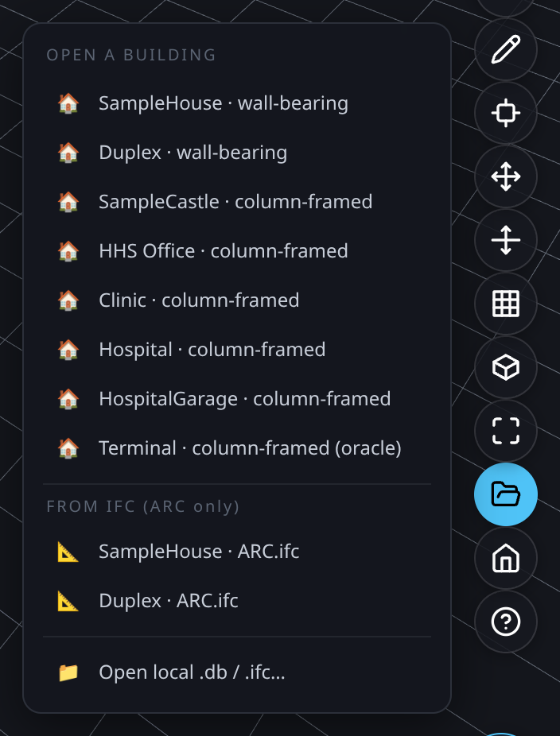
Step 3 — Click Duplex¶
Click Duplex · wall-bearing. Wait about 15–20 seconds. The house appears on the grid and its parts list fills the Outliner on the left. (The app reported 196 building elements.)
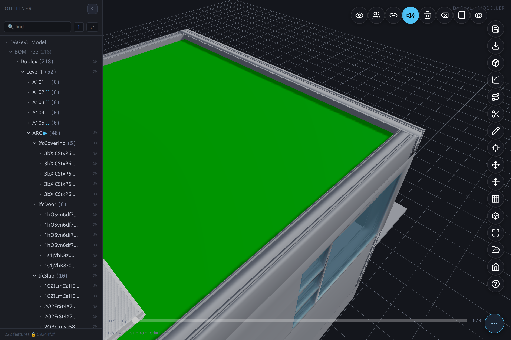
Step 4 — Click Fit¶
Click the square-corners button (Fit), or press F. The whole house is now centred in view (all 196 elements on screen).
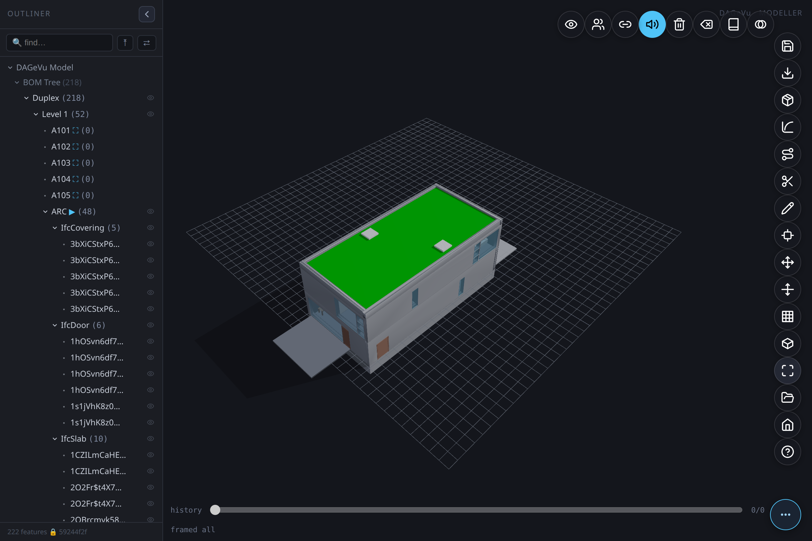
Step 5 — Click one wall¶
Click the long low wall along the bottom edge of the house. It turns light blue and the status line
at the bottom-left says selected feature #…. Exactly one thing is selected.
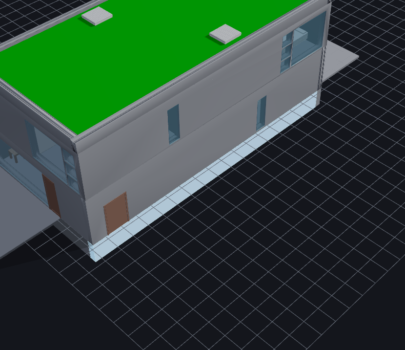
Tip: a wall that carries a door or window takes them along when it moves. That is still one undo: one Ctrl + Z takes the wall and its door back together (proved on the live site: moving a Duplex wall with two hosted openings wrote 3 rows, one Ctrl + Z restored all 3, and Save still worked).
Step 6 — Click the Move button¶
Click the four-arrow button (Move). Three coloured arrows and a yellow ring appear on the wall. The red arrow moves it sideways (X).
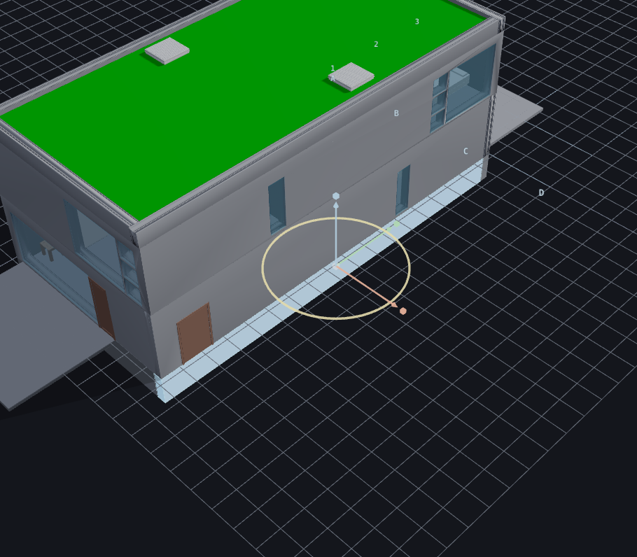
Step 7 — Drag the red arrow a little¶
Press on the red arrow, drag it a short way along its own direction, and let go. The wall slides.
The status line reads something like moved #82 Δ(0.42,0.00,0.00) verify=true. The move snaps to the grid,
so it can differ slightly from how far you dragged. (You may also see ORANGE — a soft "a neighbour is now close"
note, not an error.)
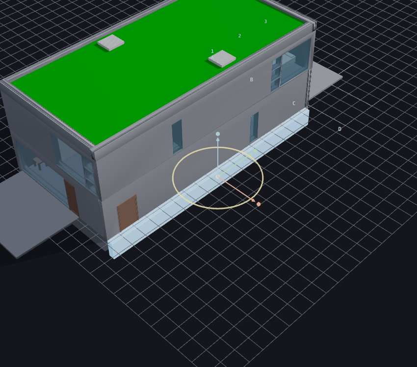
Step 8 — Undo it¶
Press Ctrl + Z. The wall jumps back to exactly where it was and the status line says undo #….
(The history slider at the bottom moves one notch left; you can also drag it.)
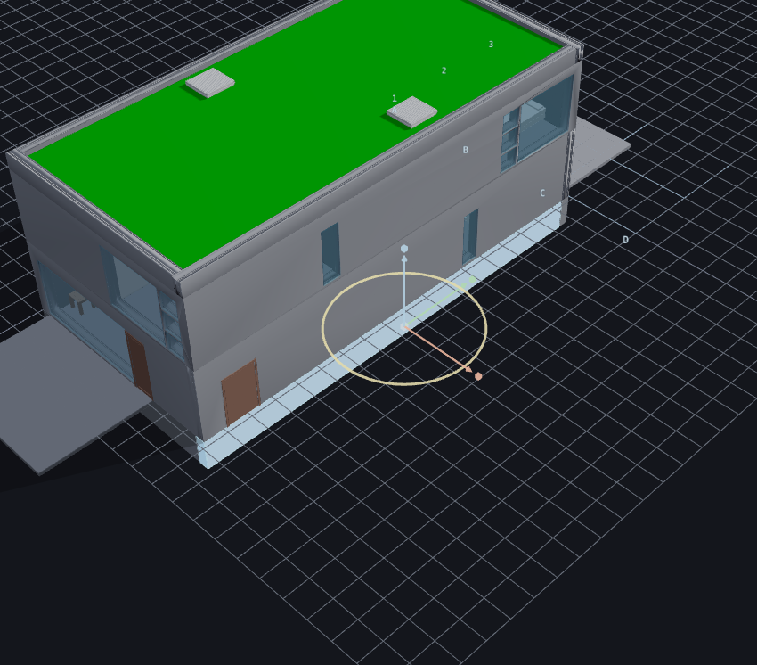
Step 9 — Click Save¶
Click the floppy-disk button at the top of the right-hand column (Save).
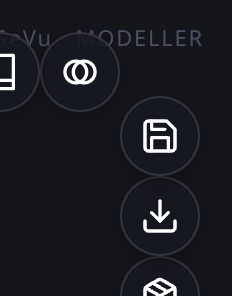
The app checks the model for clashes, then writes a snapshot. After a few seconds the status line reads
Saved — v0 (1 version). (The snapshot was about 150 KB.)
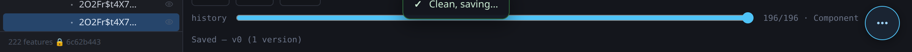
That is the whole loop: open → select → tool → drag → undo → save. Two more short parts follow: Part 2 — see what your edit costs and send it to ERP and Part 3 — fill the building with services. The full Modeller guide covers every other tool.
Part 2 — See what your edit costs, and send it to ERP¶
Do Part 1 steps 1–5 first, so a wall is selected. Everything below was run against the live site by a script; the numbers are what the app itself reported. This is the material cost and labour time of the edit — a projection, not a quote.
2.1 — Stretch the wall¶
With the wall selected click Move, then drag the small cube at the end of the gizmo along the wall's own length. The wall grows. (In the test the wall went from 10.586 m² to 13.233 m² of face area.) Press Esc to leave the tool.
2.2 — Hover the wall¶
Rest the pointer on the stretched wall. A small label appears beside the pointer:
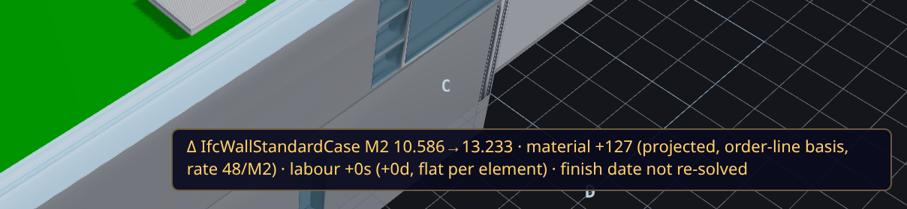
One number everywhere: the same basis prices the Project Order line and any Variation Order below.
Read it left to right: the wall class, its area before → after, the material change (+127, the extra square metres times the price per m², rounded the way the Project Order line is — 48 per m² in this run), the labour change (+0 s: an ordinary wall takes a flat time per element, so stretching it changes cost but not labour), and the note that the finish date is not re-solved (the Modeller does not re-run the whole programme for one edit).
The price per m² comes from your language pack (this run: US English = 48 per m²; another country has its own table). Moving a wall without stretching it changes no quantity, so its line reads
+0.00.
2.3 — Click the wall¶
Click the wall. The same line stays pinned at the bottom-left, above the ERP ▸ Project Order button:
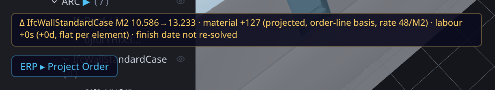
2.4 — Undo¶
Press Ctrl + Z. The line reads Δ 0 — edit undone (no quantity change).
2.5 — See the same numbers in the Viewer¶
Tap Connect in the Modeller, open the Viewer
in another tab, switch on hover name (press ') and rest the pointer on the same wall. The Viewer shows the
identical line — the same code computes it on both sides (the test compares the text byte for byte):
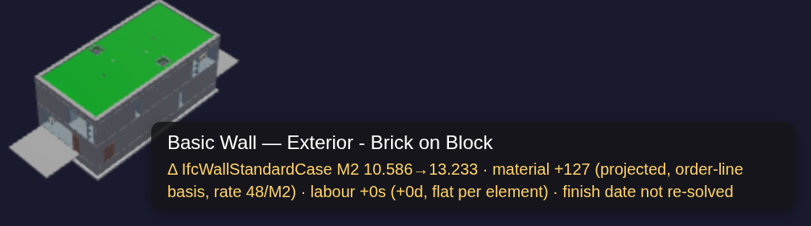
2.6 — Open the ERP panel¶
Select the wall and click ERP ▸ Project Order (bottom-left). The first click fetches the ERP data once (about 27 MB), so wait a few seconds. The panel says whether these parts already have a Project Order:
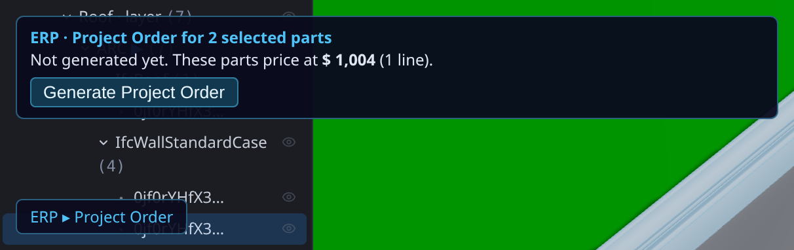
2.7 — Generate the Project Order¶
Click Generate Project Order. The panel now shows the order number and its planned amount, and an Open in ERP ↗ link:
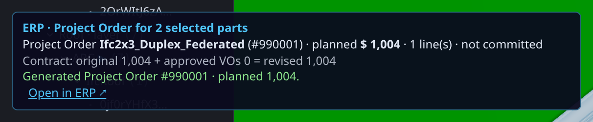
Open in ERP ↗ opens the ERP app on that record (choose the standard GardenWorld sign-in). The Viewer's own › ERP button, given the same parts, reports the same planned amount and finds this order instead of making a second one.
2.8 — Edit a part that is already in the order¶
Stretch a selected wall again (2.1). The panel now calls it a variant of the same order and offers two choices:
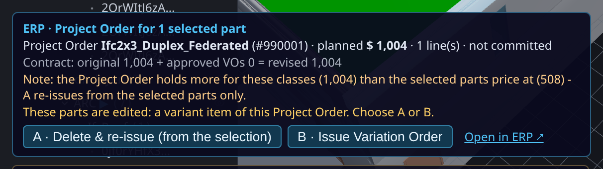
- A · Delete & re-issue — for work that has not started. It deletes the old order and issues a fresh one from the selected parts (test: still exactly one Project Order, planned amount 1,004 → 635). If the order held more than the selected parts, the panel says so first.
- B · Issue Variation Order — for an order already committed to a vendor. It adds a Variation Order to the same Project Order instead of starting over. Its amount is the priced difference of the order line it amends, on the same basis as the order itself: original order + Variation Order = what a fresh order for the edited parts costs, to the cent.
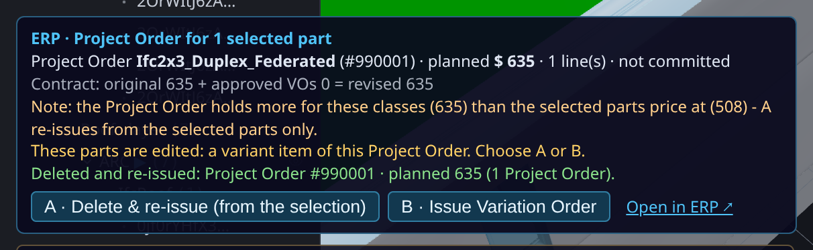
2.9 — When it is committed, only B is allowed¶
"Committed" is read from the ERP records (a purchase order on the project that is completed). Then A is greyed out with the reason written under it, and B stays available:
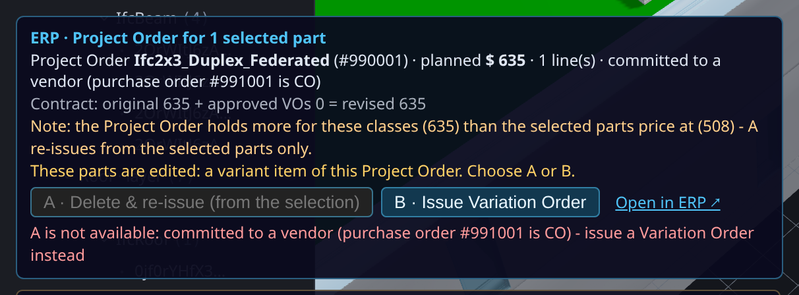
Click B. The panel sends the Variation Order and lists it with its status read from the ERP record (Drafted), here 127.00 for a second, larger stretch (original 635 + 127 = 762, the fresh fold):
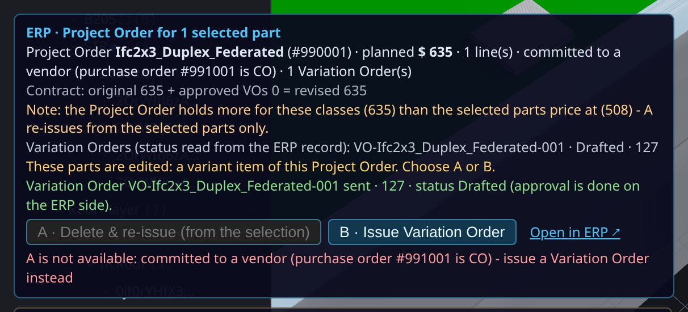
Approval of a Variation Order is done on the ERP side; the Modeller only sends it and shows the status the ERP record carries (Drafted, Approved …). This works for any IFC you open: the order is keyed by the model's own name (e.g. SampleHouse_ARC for the sample .ifc), tested on the local-IFC open path.
Part 3 — Fill the building with services (MEP walk)¶
Duplex opens as a bare architectural model. A walk places the plumbing, ducts, cable or sprinkler components and draws their runs. Only plumbing was walked step by step for this page, on the live site.
3.1 — Open Duplex¶
Open Duplex as in Part 1 step 3. It is a bare architecture model: no plumbing fixtures, no pipes yet (measured: 196 elements, 0 fixtures, 0 pipe runs).
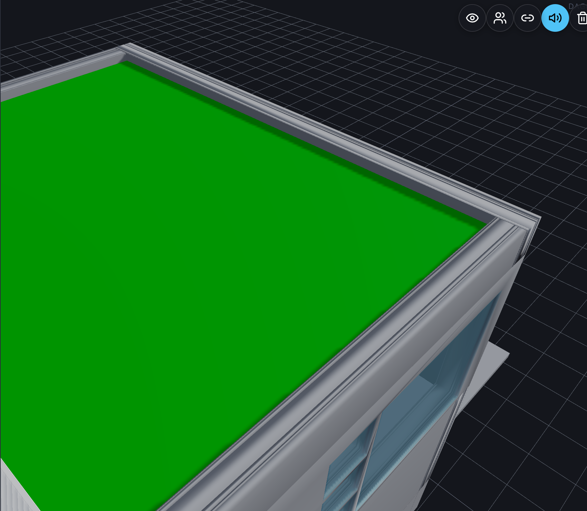
3.2 — Find the PLB row in the Outliner¶
In the Outliner (left) scroll to the Walk rows: ACMV, ELEC, PLB, FP. PLB is plumbing. Each row has a blue ▶ — its tooltip reads "Walk this discipline".
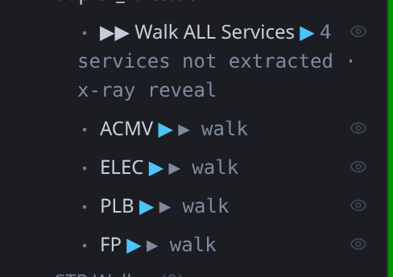
3.3 — Click ▶ on PLB¶
Click the ▶ on the PLB row. After a few seconds the fixtures are placed and pipes are drawn between them. The
status line reads PLB — 18 placed across 6/21 spaces · 22 nn-chains. Measured on the live site: 18 fixtures, 22 pipe
runs all drawn, 22 written to the signed history, 5 bend fittings, one history step "Walk PLB (45)", and the
building itself untouched (196 elements before, 196 after). The pipes sit inside the solid building, so press X-ray
(the pill in the right-hand rail, or the X key): the structure goes glass and the plumbing shows.
3.4 — What the pipes are¶
Every pipe is a signed row that names the product it is drawn as, and its size is read from that row — never typed in: 25.4 mm cold water (1 run) and 48.3 mm waste (21 runs), all 22 rows citing a real product. (You cannot click a pipe to select it yet: it sits inside the solid building and even the x-ray glass takes the click.)
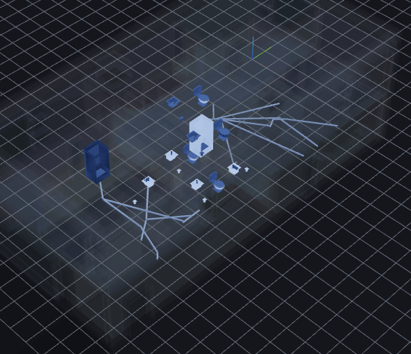
3.5 — Move a fixture and its pipes follow¶
Moving a walked fixture re-routes its pipes. Today there is no drag handle on a walked fixture (a gridline drag moves walls, not fixtures): clicking one
only identifies it (walked PLB · FlowTerminal … (generated — identify only), Move stays greyed out; measured with the building hidden). So this
step was proven by moving a fixture 0.5 m with the same signed move the Move tool writes: the network re-routed in
about half a second (524 ms on the live site, Duplex) — 22 runs became 16, and a run now ends exactly at the fixture's new spot
(distance 0.0000 m; it was 0.500 m from the old spot). The re-routed runs and their bend fittings are written to the signed
history too.
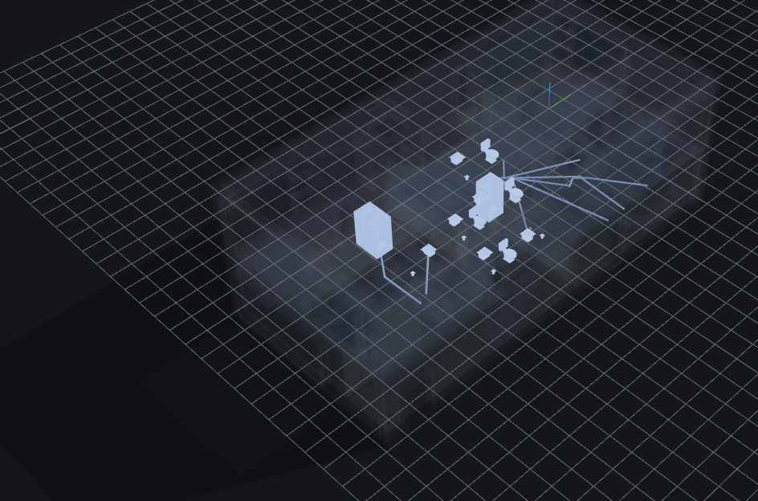
(Terminal, a much larger building, has not been timed.)
3.6 — Ctrl + Z takes the move back¶
Press Ctrl + Z. The fixture and its pipes return: the original 22 runs are back to within 1 mm.
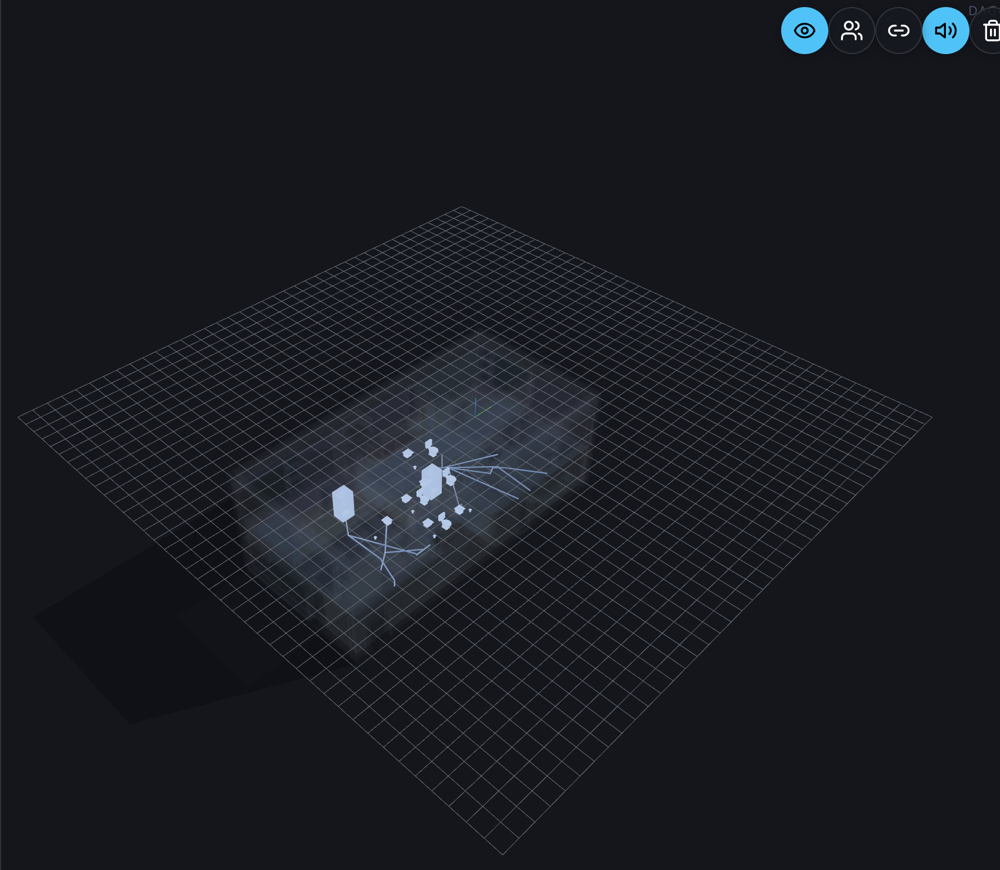
3.7 — Ctrl + Z again takes the whole walk back¶
Press Ctrl + Z once more. The whole walk goes — fixtures 18 → 0, pipe runs drawn 22 → 0 — and the model is back to its opened state (history position 196).
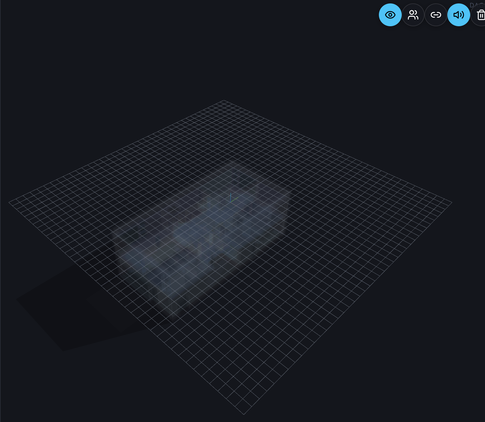
3.8 — Ctrl + Y brings it back¶
Press Ctrl + Y. The same 18 fixtures and 22 pipe runs return (history position 196 → 241).
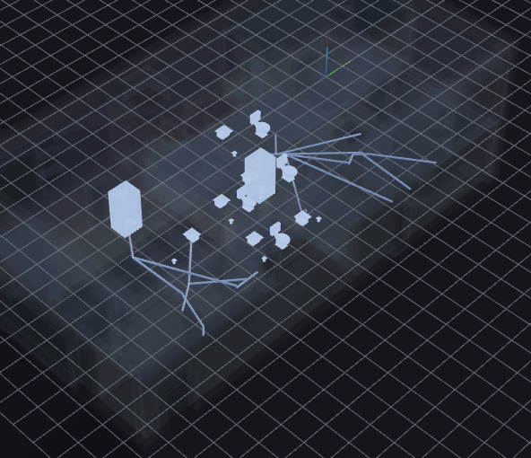
What is routed today: plumbing, as above. In Walk ALL Services the existing witness (W-MEP-OPENPATH, Duplex, run
2026-09-30) also shows ACMV ducts (8 runs) and FP sprinklers (4 runs) routed and signed; ELEC cable is placed
but not routed (0 runs on Duplex). Those were not walked step by step here.
Part 4 — Stretch the grid safely¶
A column grid can be stretched until a beam would span too far. The Modeller colours each bay as you drag and offers one more column when a bay passes the limit. Walked step by step on HospitalGarage, a concrete (RC) frame: 140 columns, 195 beams.
What the colours mean. Green is fine. Orange means the span needs a deeper beam than the building has (the tip names the depth). Red means the span is over the limit for that material. These are preliminary sizing rules: the structural engineer confirms.
4.1 — Open HospitalGarage¶
Open the Modeller, click the folder (Open) and click HospitalGarage (as in Part 1). The Modeller reads the material from the building's own beam names: concrete, RC (166 of its 195 beams).
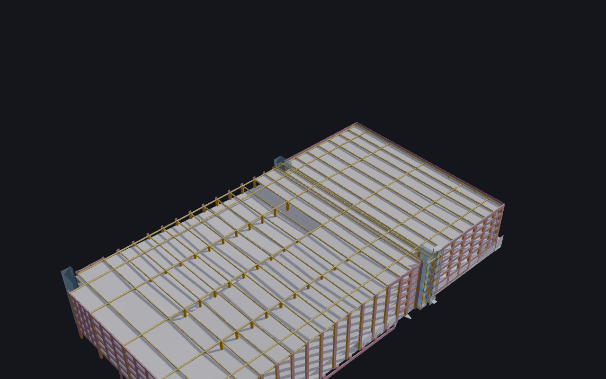
4.2 — Click Move Grid and grab a gridline¶
Click Move Grid. The building's own column lines appear as the grid (17 × 29 lines). Press on a gridline between two columns, here line 8, and keep the button down.
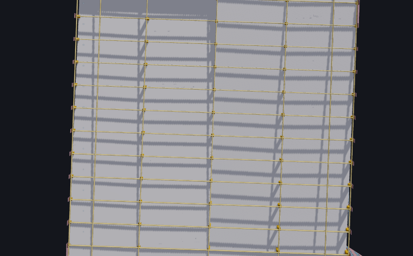
4.3 — Drag it: the bay turns orange¶
Drag the line. The bays next to it were 5.49 m. Past 6.42 m (the building's own beam depth, 0.535 m, times the RC ratio 12) they turn orange. Hover the orange bay: the tip says the beam depth that span needs (6.49 m needs at least 0.54 m).
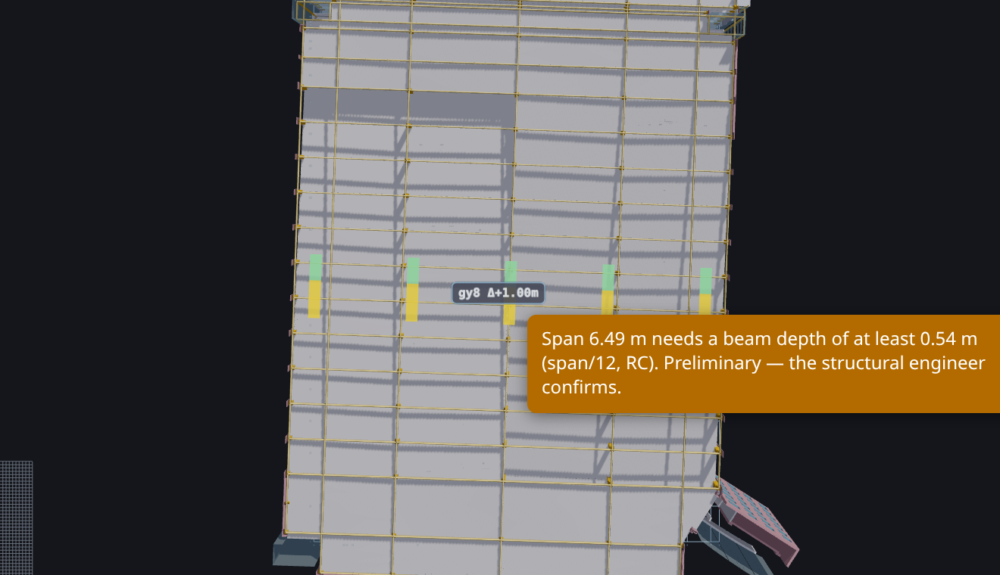
4.4 — Keep dragging: the bay turns red¶
Past 12 m, the RC limit, the bay turns red. The tip reads: "Limit for this column span (12 m, RC). Add one more?"
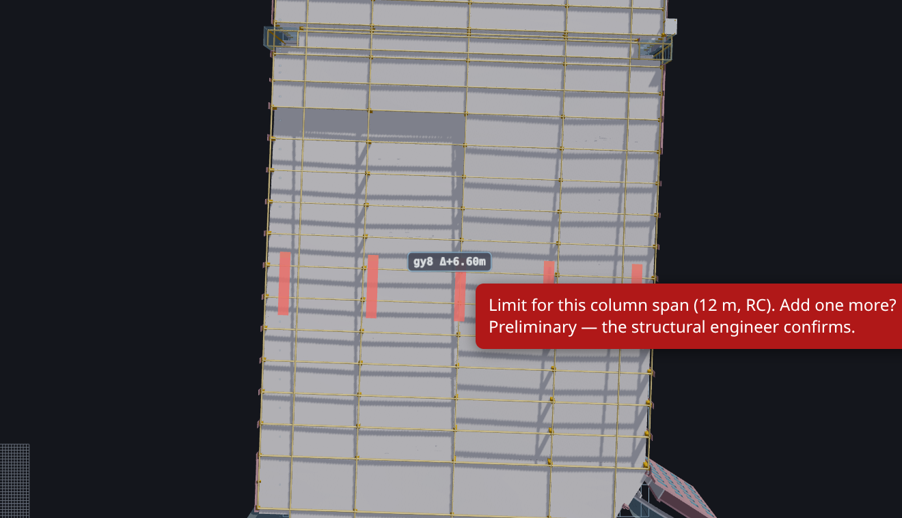
4.5 — Let go¶
Release the button. Nothing is committed yet: the tip now has two buttons, Add one more and Cancel. Cancel stops the drag at the limit (12 m).
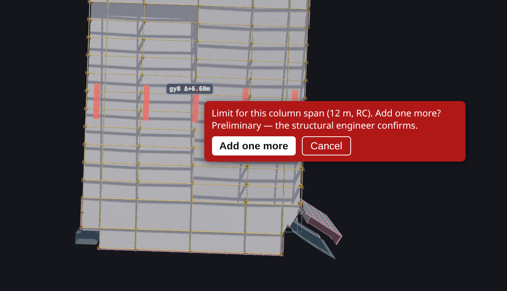
4.6 — Click Add one more¶
One column line appears at the middle of the red bay: 5 new columns, copies of the building's own concrete column (the same shape and type as the existing ones). The 12.09 m bay becomes two 6.04 m bays, both green by the same rule. The grid goes from 29 to 30 lines on that axis.
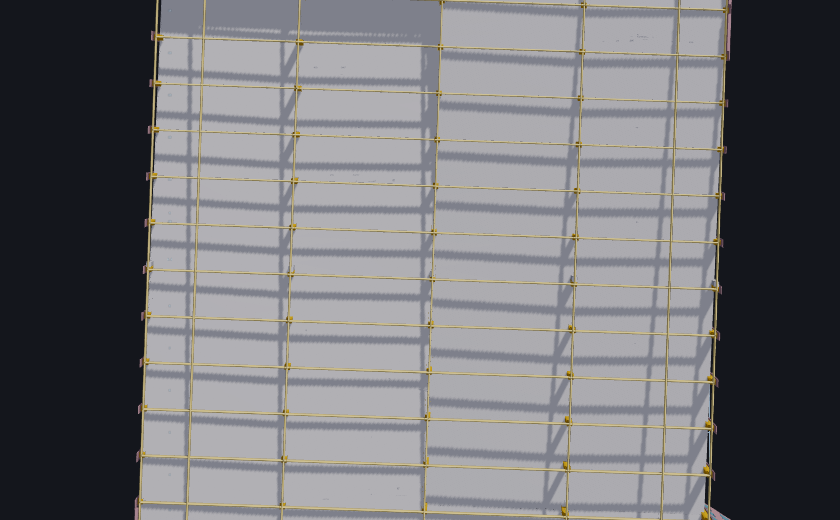
4.7 — Ctrl + Z takes it all back¶
Press Ctrl + Z once. The 5 columns, the new line and the drag all go in one step; the bay is back to 5.49 m. Ctrl + Y brings them back (5 columns).
Limits, as tested: a grid that was not measured from columns (a wall-bearing building, or a grid you drew yourself) gets no colours. If the material cannot be read from the building's names, nothing is coloured. Dragging a line past its neighbour is not blocked by this check.
Part 5 — See the history of one thing¶
The dots above the history slider are every edit you made, in order. The chips next to them sort those edits by kind, so you can look back at just your wall edits without wading through everything else. This part only looks; it never changes the model. Walked on Duplex after four edits: two wall moves, an ELEC walk and a door insert.
5.1 — Look at the chips¶
After a few edits, chips appear next to the dots: + Walls (2), + Openings (2), + MEP (1), + Inserts (1). The number is how many of your edits touched that kind. A wall move that carried its door and window counts under Walls and Openings; so does the door you inserted.
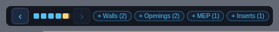
5.2 — Double-click + Walls¶
The Walls strip opens under the dots: one dot per wall edit, oldest first. + Wall #112 (1) opens that one wall's own history. On a phone, tap the chip instead.
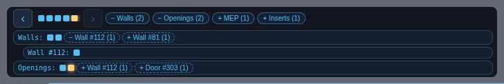
5.3 — Tap the strip¶
It glows blue and the badge reads Viewing: Walls.
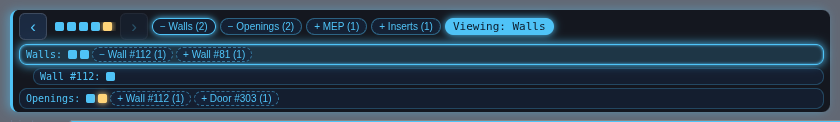
5.4 — Press ‹¶
The view jumps to your newest wall edit, skipping the insert and the walk you made after it. That wall is selected and framed. Press ‹ again for the wall edit before it, › to come forward. The model does not change.
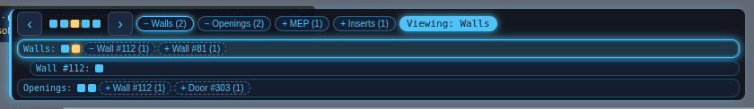
5.5 — Press Esc¶
The glow goes and the arrows step through every edit again. Tapping the strip again, or making a new edit, does the same.
Limits, as tested: this is for looking. To undo, use Ctrl + Z as before (it undoes your last edit, whatever its kind). Undoing only one kind of edit is not available yet.